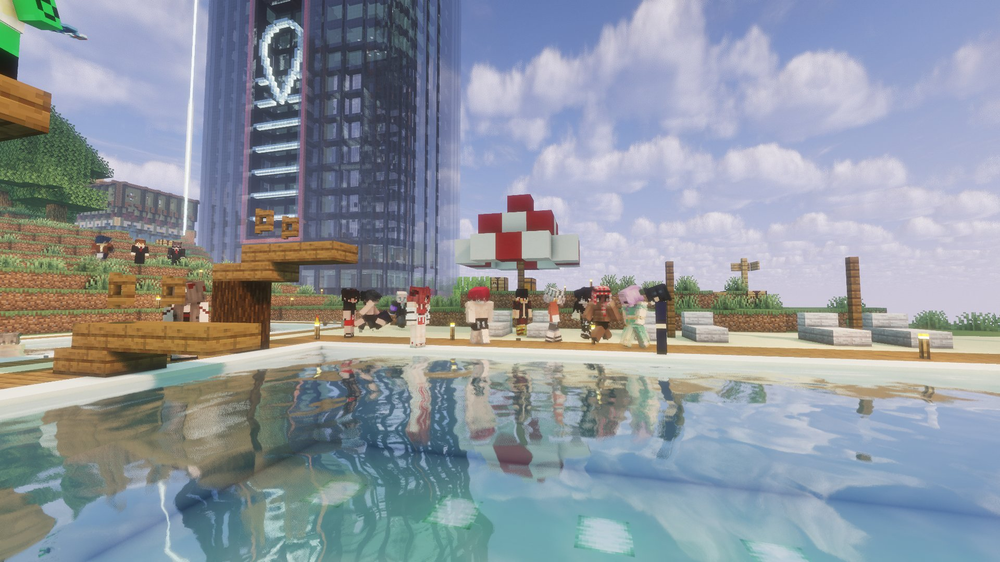
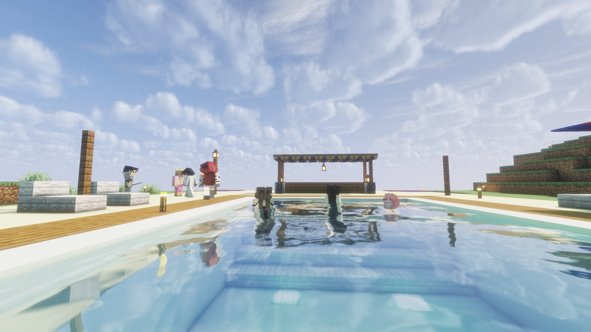
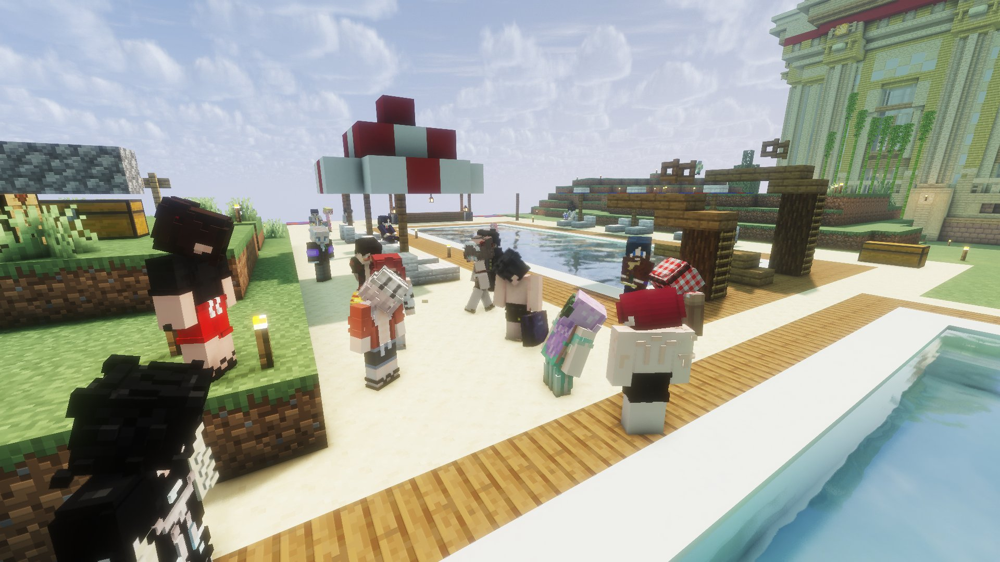

Pool party derrière la banque : la communauté reprend souffle
Après des jours marqués par le deuil et la violence, Mark a organisé une pool party derrière la banque. Un moment de légèreté — mais aux conséquences inattendues.

Après des jours marqués par le deuil, la violence et l'inquiétude, notre territoire avait besoin d'un moment de légèreté. C'est Mark qui a répondu présent, en organisant une pool party derrière la banque qui a rassemblé une bonne partie de la communauté. Un lieu central, accessible à tous, pour une initiative aussi simple que précieuse.
Un moment de répit bien mérité
Entre l'assassinat de Boo, le kidnapping de Dame Diane et les menaces qui pèsent encore sur notre territoire, les citoyens avaient le cœur lourd ces derniers jours. La pool party de Mark a offert à chacun ce dont il avait besoin : du soleil, de la bonne humeur et de la compagnie. Le temps d'une après-midi, les inquiétudes ont été mises de côté pour laisser place aux rires et aux souvenirs qui se construisent ensemble.

La force d'une communauté unie
Ce rassemblement rappelle une vérité fondamentale : notre communauté est soudée. Même face à l'adversité, même après les épreuves les plus dures, les citoyens de ce territoire savent se retrouver, se soutenir et avancer ensemble. Mark, par son geste généreux et spontané, a offert bien plus qu'une fête — il a offert un moment de guérison collective.
Quand la fête a des conséquences
Mais la pool party n'a pas été que synonyme de détente pour tout le monde. La présence de Sohalia à cet événement — alors qu'elle serait actuellement en grève — n'est pas passée inaperçue aux yeux de Zackk, directeur de la banque. Une présence jugée incompatible avec un mouvement de grève sérieux, qui aurait directement pesé dans une décision lourde de conséquences : Zackk a annoncé la hausse des taux bancaires à 15%.
Une décision qui fait déjà grincer des dents sur le territoire et soulève de nombreuses questions. Pourquoi une telle sanction ? Sohalia assume-t-elle sa participation ? Zackk ira-t-il jusqu'au bout ? Le Karmine Déchaîné a d'ores et déjà contacté les deux concernés.

"On nous a volé Boo. On nous a kidnappé Dame Diane. Et maintenant nos taux bancaires flambent. Mais on était bien à la pool party."
— La Rédaction
Le Karmine Déchaîné tient à remercier Mark pour cette belle initiative et rappelle à ses lecteurs que la résilience est notre plus grande force.